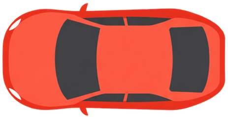
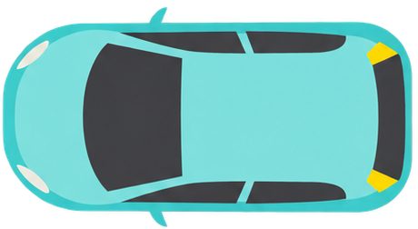
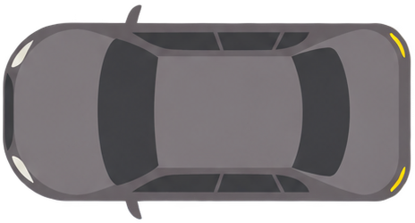
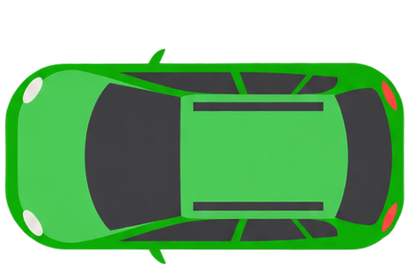
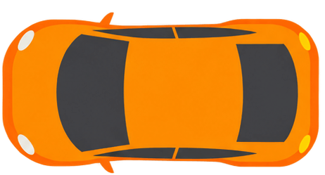

להבין את הכביש.לקבל החלטות.
קורס נהיגה נכונה עם אורן בכור, מורה נהיגה מוסמך עם יותר משמונה שנות ניסיון. הסברים ותרגול שמחברים בין חוקי הדרך למצבים בכביש.
קריאה ותרגול פתוחים. הקורס המלא בהכנה.
אורן בכור מורה לנהיגה ומנחה הקורס

אורן הוא מורה נהיגה מוסמך עם ניסיון של למעלה משמונה שנים. בקורס הוא מחבר בין חוקי הדרך למצבים שפוגשים מאחורי ההגה, בעזרת הסברים וסרטונים שיעזרו לכם להבין מה קורה בכביש ואיך לפעול בבטחה. אפשר לחזור לכל נושא בקצב שלכם, גם כהכנה לשיעור הנהיגה הבא.
-

-

-

-



קורס נהיגה נכונה: מבינים את הכביש
בחרו נושא, קראו את ההסבר ותרגלו בשאלון. אפשר להתחיל ביסודות הנהיגה או לחזור לנושא מהשיעור האחרון. סרטונים ותרשימים יתווספו בהמשך.
- רואים מצב אמיתי מהכביש
- מבינים איזה חוק חל
- לומדים מהי הפעולה הבטוחה
נושאי הלימוד
יסודות הנהיגה והלמידה
לחבר בין חוקי הדרך לתרגול המעשי, להבין את ההיגיון מאחורי הפעולות וללמוד ממקרים אמיתיים.
תמרורים ומהירויות
להכיר תמרורים נפוצים, להבין מתי תמרור גובר על ברירת המחדל ולבחור מהירות שמתאימה לדרך.
זיהוי כבישים ונתיבים
לזהות כביש חד-סטרי או דו-סטרי, לבחור נתיב נכון ולהבין לאן כל נתיב מוביל ומתי זה הזמן הנכון לשנות אותו.
זכויות קדימה ופניות
לקרוא את מבנה הצומת ולדעת איך לתכנן פנייה שמאלה, פנייה ימינה ופניית פרסה בבטחה.
מדרג הציות
לזהות איזו הוראה מסדירה את התנועה כאשר שוטר, רמזור, תמרור וכללי הדרך נפגשים.
מעגלי תנועה וצמתים
להתקרב נכון למעגל תנועה ולצומת, לסרוק את התנועה ולבחור את התזמון המתאים לכניסה.
עקיפה ואיסורי עקיפה
להבין מתי עקיפה אפשרית, לזהות איסורים ולבדוק אם מרחק הראייה ותנאי הדרך מאפשרים אותה.
תכנון נסיעה
להביט רחוק, לזהות סיכונים מוקדם ולתכנן נתיב ומהירות לפני שמגיעים לנקודת ההחלטה.
טעויות נפוצות בטסט המעשי
להכיר את המצבים שבהם תלמידים נכשלים ולתרגל הסתכלות, מיקום וקבלת החלטות לפני המבחן.
נהג חדש, רישוי ושיטת הניקוד
להכיר את נושאי הרישוי והליווי, את שיטת הניקוד ואת מקורות המידע על חוקי התעבורה.
הקורס משלים את התרגול בשיעורי הנהיגה ואינו מחליף את מורה הנהיגה.
שאלות נפוצות
תשובות קצרות על דרך הלמידה בקורס ועל השילוב שלו בשיעורי הנהיגה.
כעת אפשר לקרוא ולתרגל בנושאי הלימוד. הסרטונים וההרשמה לקורס המלא עדיין אינם זמינים.
למי מיועד הקורס?
הקורס מיועד למי שלומדים נהיגה ולמי שרוצים להבין טוב יותר את חוקי הדרך ואת ההיגיון שמאחורי הפעולות בכביש.
האם הקורס מחליף שיעורי נהיגה?
לא. הקורס משלים את שיעורי הנהיגה ואינו מחליף את מורה הנהיגה. אפשר לחזור להסבר אחרי שיעור ולהביא שאלות לשיעור הבא.
איך לומדים בקורס?
אפשר לבחור כל נושא שמעניין אתכם, ללמוד בכל סדר ולחזור להסברים בקצב שלכם. אין צורך לסיים נושא אחד כדי לעבור לנושא אחר.
מה כוללים הסרטונים?
בסרטונים אורן מסביר מצבי נהיגה אמיתיים מהכביש ומראה איך להבין אותם ולקבל החלטה נכונה. אפשר לעצור, לצפות שוב ולחזור להסבר בקצב שלכם.
איך עובדים שאלוני התרגול?
בכל שאלון תענו על שאלות רב-ברירה שיעזרו לכם לבדוק אם הבנתם את הנושא ולתרגל את קבלת ההחלטות בכביש.
מתי הקורס המלא יהיה זמין?
הקורס המלא עדיין בהכנה. מועד פתיחה עדיין לא פורסם. בינתיים אפשר לקרוא ולתרגל בנושאי הלימוד. הסרטונים וההרשמה לקורס המלא עדיין אינם זמינים.